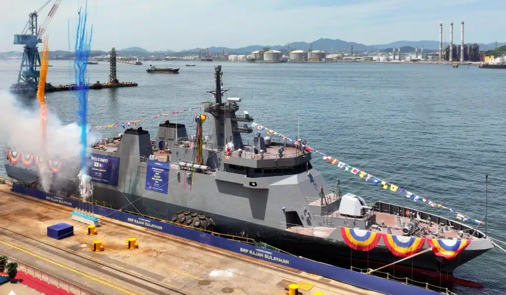

Gallery


The BRP Rajah Sulayman (PS-20) stands as a testament to the enduring partnership between the Philippine Navy and its international allies. Originally commissioned as USS PCE-1129 in the United States Navy during World War II, this vessel was transferred to the Philippines in 1993, marking a significant milestone in maritime cooperation.
As the first Offshore Patrol Vessel in the Philippine Navy's fleet, the BRP Rajah Sulayman plays a crucial role in safeguarding the nation's vast maritime territories. Its primary purpose encompasses coastal patrol, search and rescue operations, and maritime law enforcement, ensuring the security of Philippine waters against various threats.
The significance of this vessel extends beyond its operational capabilities. It represents the Philippine Navy's commitment to maintaining sovereignty over its exclusive economic zone, combating illegal activities such as smuggling and piracy, and providing humanitarian assistance during times of crisis. With over three decades of service, the BRP Rajah Sulayman continues to be a vital asset in promoting peace and stability in the region.
| Specification | Details |
|---|---|
| Vessel Name | BRP Rajah Sulayman |
| Hull Number | PS-20 |
| Type | Offshore Patrol Vessel (OPV) |
| Operator | Philippine Navy |
| Primary Role | Maritime Patrol & Security |
| Secondary Role | Search and Rescue, HADR |
| Length | 68.8 meters |
| Beam | 8.1 meters |
| Draft | 2.2 meters |
| Displacement | 914 tons |
| Speed | 20 knots (max) |
| Range | 8500 nautical miles at 14 knots |
| Crew | ~70 |
Quantity: 1
Main armament for naval defense, capable of engaging surface targets and aircraft with high-explosive shells up to 13 km range.
Quantity: 1
Anti-aircraft and anti-surface weapon with rapid fire capability, effective against fast-moving targets and small vessels.
Quantity: 4
Heavy machine guns for close-range defense against small boats, personnel, and low-flying aircraft with armor-piercing rounds.
Quantity: 2
Light anti-aircraft cannons providing point defense against aircraft and small surface threats with high rate of fire.
Quantity: 2
Versatile medium machine guns in 7.62mm caliber for anti-personnel and light vehicle defense, offering sustained fire in close-quarters combat with reliable performance.
Quantity: 1
Indirect fire support weapon delivering 81mm high-explosive rounds against shore targets or enemy positions, providing versatile artillery capability with adjustable range.
Conducts surveillance and intercepts unauthorized vessels along coastal areas to maintain maritime security and prevent illegal activities.
Provides rapid response to maritime emergencies, rescuing distressed personnel and vessels in Philippine territorial waters.
Intercepts and disrupts smuggling activities, including drugs and contraband, to protect national borders and economic interests.
Enforces maritime laws, combats illegal fishing, and upholds sovereignty in Philippine exclusive economic zones.
Equipped for basic submarine detection and defense, contributing to layered maritime defense strategies.
Delivers aid, medical support, and evacuation during natural disasters and humanitarian crises in coastal regions.
Engaged in high-stakes patrols in the Sulu Sea, intercepting pirate vessels and ensuring safe passage for commercial shipping in one of the world's most dangerous maritime zones.
Provided critical aid during Typhoon Yolanda, delivering supplies and medical assistance to remote coastal communities devastated by the super typhoon.
Participated in multinational exercises with allied navies, enhancing interoperability and demonstrating Philippine Navy capabilities in the South China Sea.
Conducted daring rescue operations, saving lives during maritime emergencies and providing rapid response in Philippine territorial waters.
Enforced maritime laws against illegal fishing and smuggling, protecting vital marine resources and maintaining sovereignty in the West Philippine Sea.
Conducted intensive patrols to intercept drug traffickers and contraband smugglers, seizing illicit goods and disrupting criminal networks operating in Philippine waters during the early 2000s.
Played a pivotal role in relief efforts following Typhoon Haiyan, delivering emergency supplies, medical aid, and evacuation support to devastated coastal communities in the Visayas region.
Participated in joint exercises with the US Navy and other allies, honing interoperability skills and showcasing Philippine naval prowess in multinational operations across the Pacific region.
Established a foundation for modern Philippine naval operations through extensive coastal patrols shortly after commissioning, safeguarding territorial waters and building operational experience in the 1990s.
Named after Rajah Sulayman, a legendary Filipino leader who defended Manila against Spanish forces in the 16th century.
As the first Offshore Patrol Vessel in the Philippine Navy, it sets the standard for maritime security and coastal defense.
One of the oldest active ships in service, with over three decades of unwavering duty protecting Philippine waters.
Has participated in joint naval exercises with foreign allies, enhancing interoperability and regional maritime cooperation.
The crew undergoes rigorous, ongoing training in maritime operations, ensuring peak performance in diverse mission scenarios.
Recognized for its vital role in humanitarian missions, providing aid and support during natural disasters across the Philippines.
The BRP Rajah Sulayman (PS-20) was originally commissioned as USS PCE-1129 in the United States Navy during World War II. Transferred to the Philippine Navy in 1993, it has served as a vital asset in maritime security, participating in numerous patrols and operations to safeguard Philippine waters.
Life aboard the BRP Rajah Sulayman involves rigorous training, long patrols, and a strong sense of camaraderie. The crew of approximately 70 personnel handles diverse tasks from navigation to maintenance, fostering discipline and teamwork in challenging sea conditions.
Beyond standard patrols, the vessel engages in search and rescue missions, humanitarian assistance, and disaster response. It plays a key role in anti-smuggling operations and supports international maritime exercises to enhance regional security.